Erstgespräch/Erstberatung:
Im persönlichen Informations- und Beratungsgespräch werden erste Vorstellungen, Fragen zum Wunsch-Objekt sowie Finanzierung beantwortet.

Im persönlichen Informations- und Beratungsgespräch werden erste Vorstellungen, Fragen zum Wunsch-Objekt sowie Finanzierung beantwortet.
Nachdem Sie sich für ein Tiny-House Projekt entschieden haben, gehen wir nun in die Planungsphase. Dabei sind meist mehrere Termine notwendig, bevor die Grundlagen des Projektes fixiert werden. Erstvertrag ist zu unterzeichnen sowie €4.000,- Erstvertragsentgelt zu leisten. Das Entgelt wird anschließend vom Kaufpreis abgezogen.
Sobald die Grundstruktur des Projektes feststeht, erarbeiten wir gemeinsam die Ausstattungsmöglichkeiten und -wünsche Ihres Traumhauses.
Der Bau Ihres Eigenheimes startet und mit diesem auch die Unterzeichnung des Kaufvertrages. Der Bau Ihres Tiny Houses findet in 3 bis 5 Bauphasen (abhängig von der Ausbaustufe) statt. Nach Abschluss jeder Bauphase ist ein prozentueller Teil des Kaufpreises zu entrichten.
Während der letzten drei Bauphasen findet die Planung und Festlegung der Inneneinrichtung statt. Gemeinsam wird die für sie passende Inneneinrichtung geplant und erstellt.
 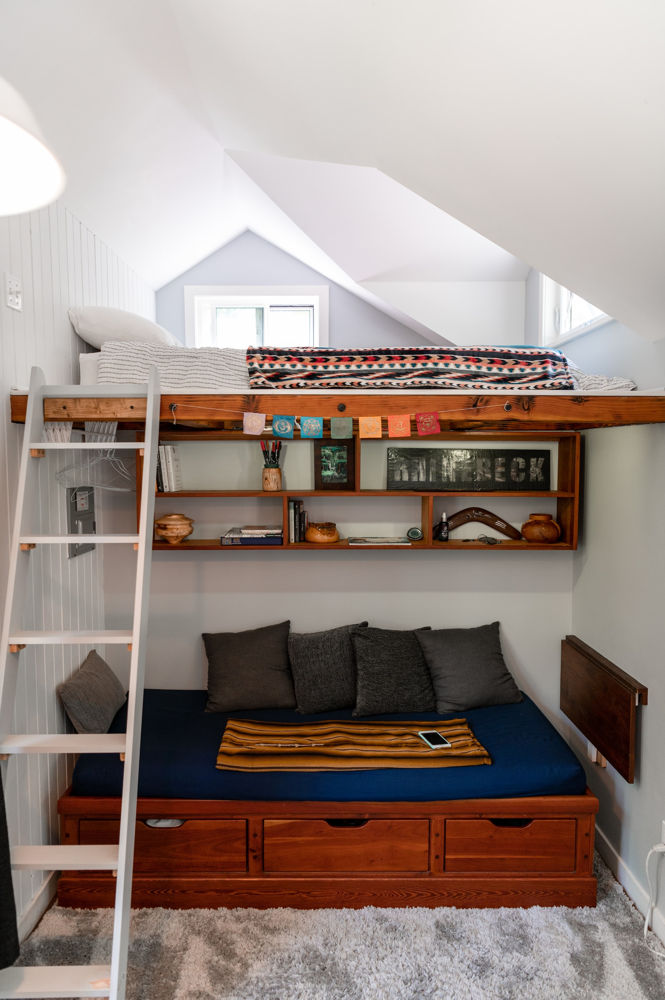
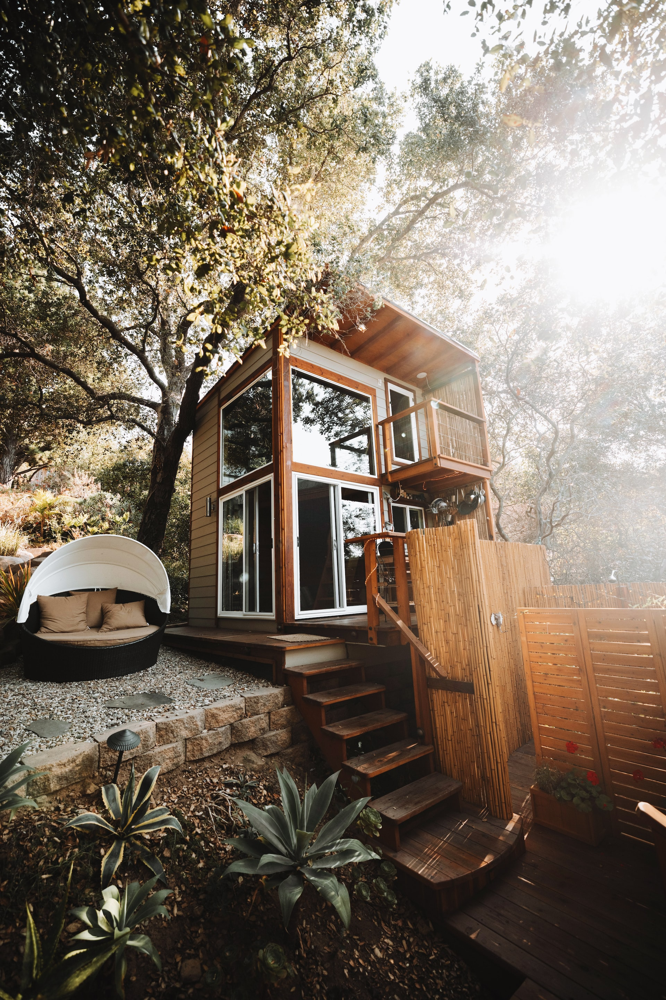
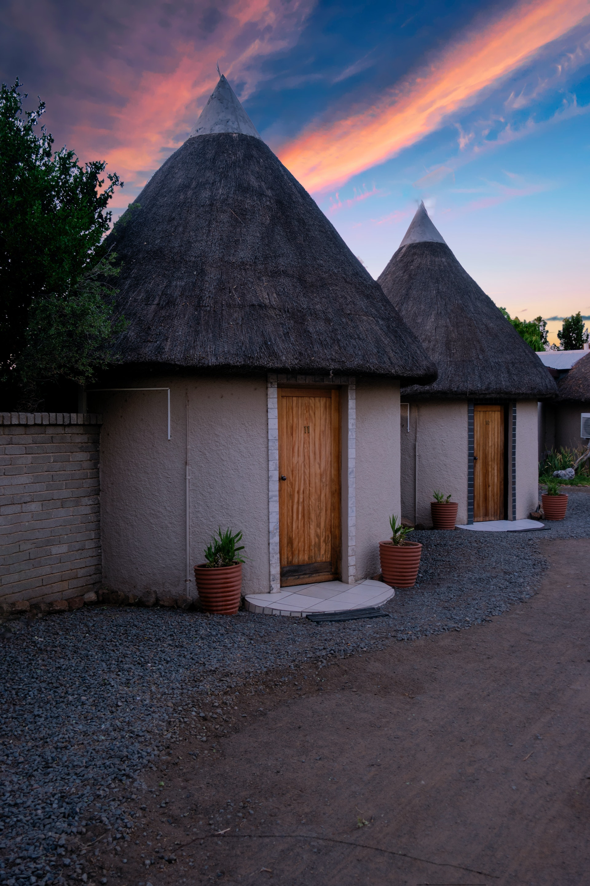
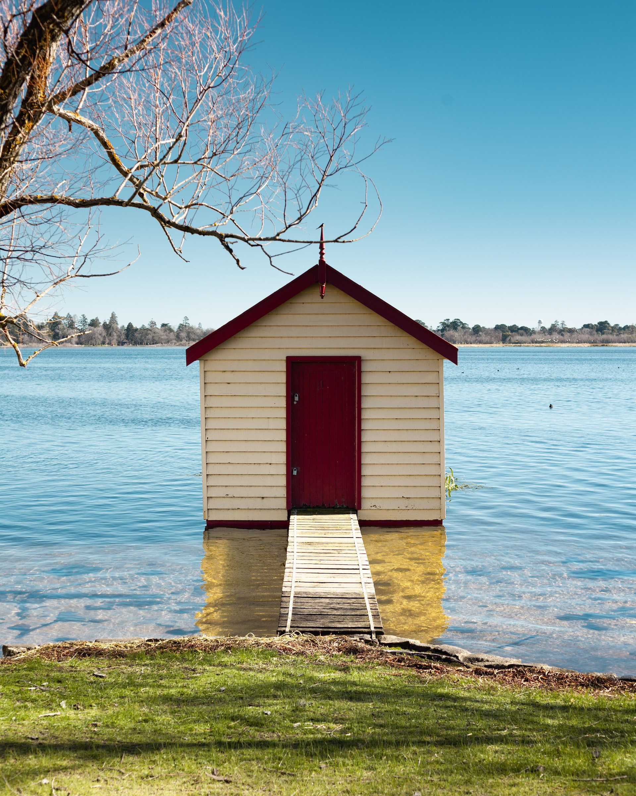
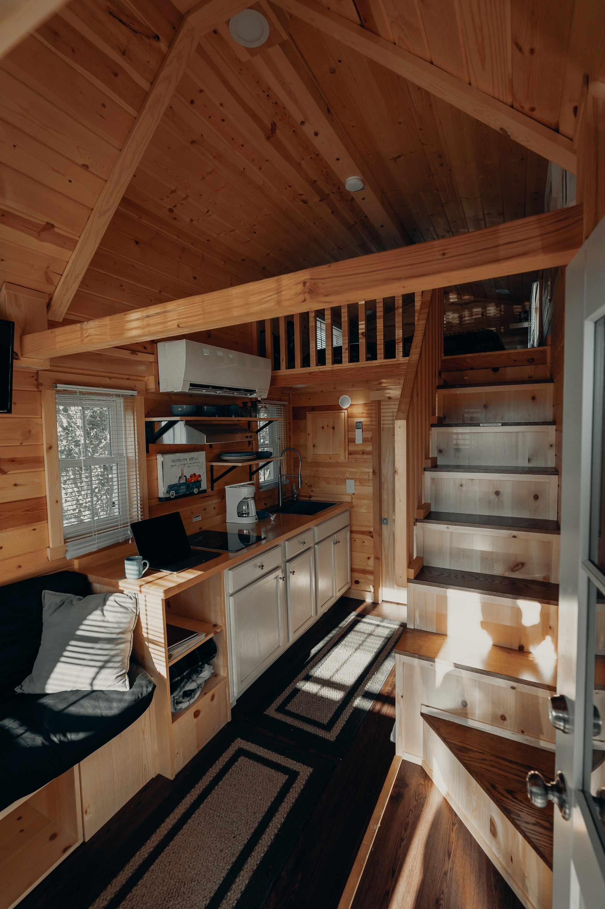
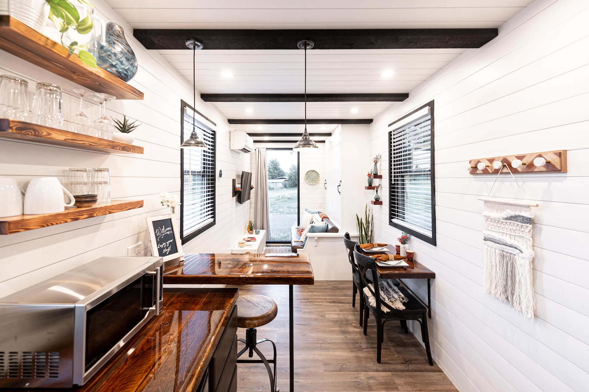
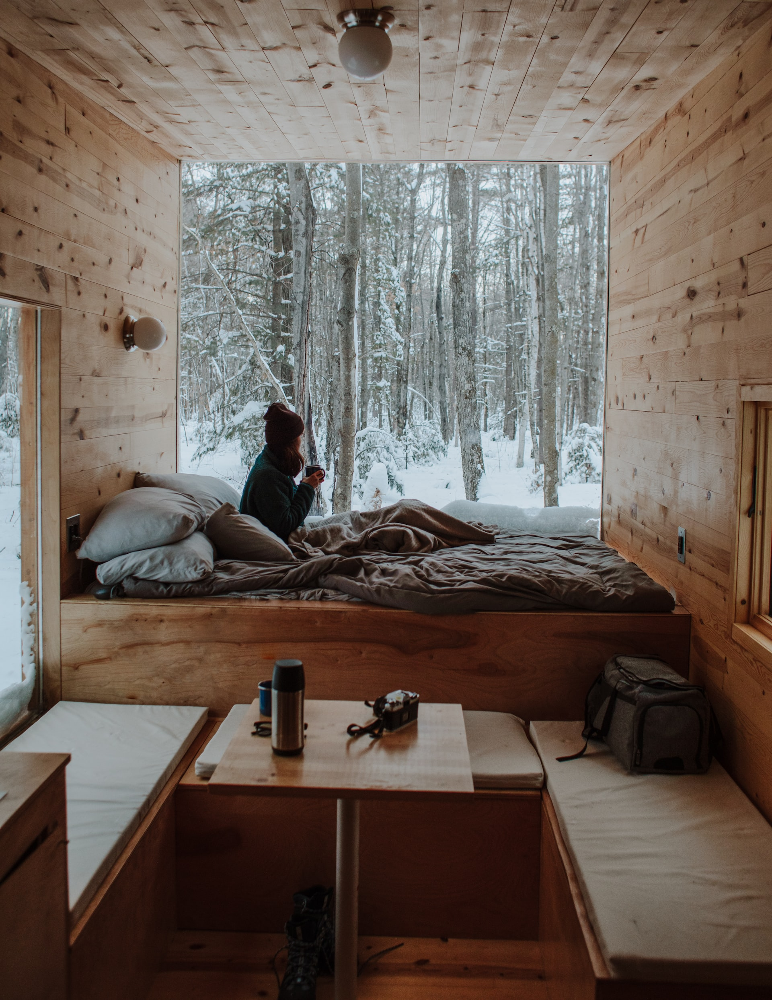
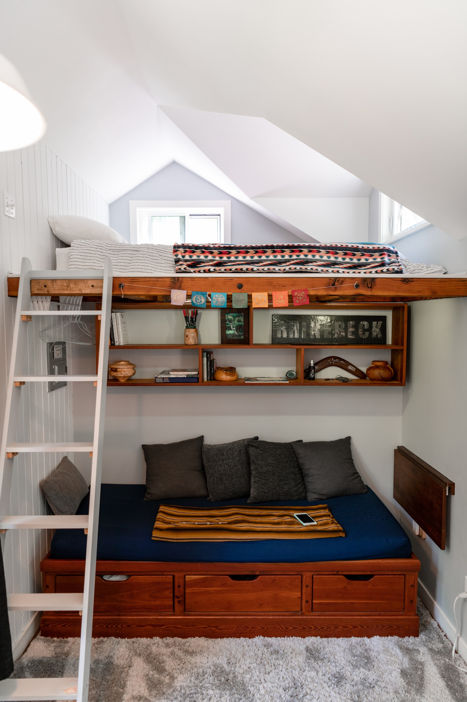
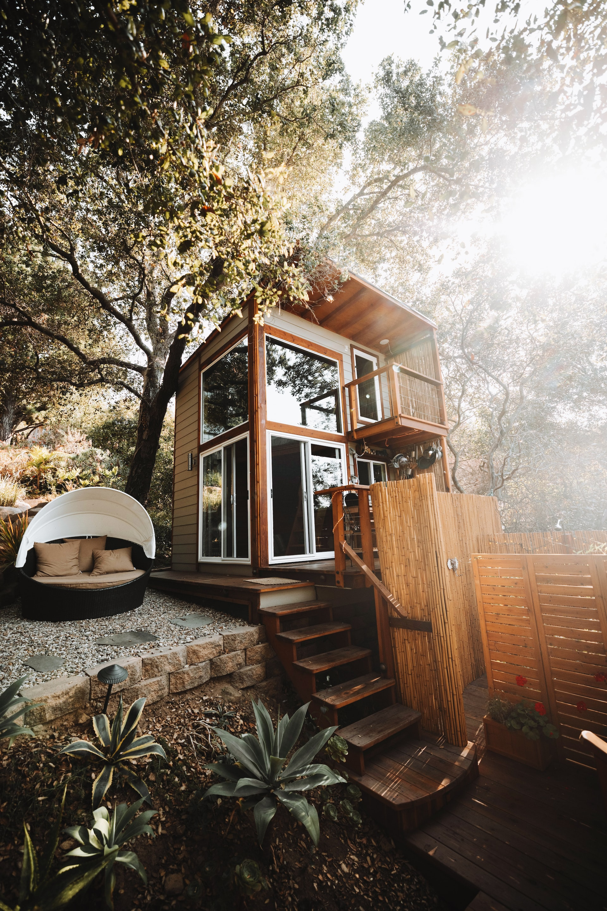
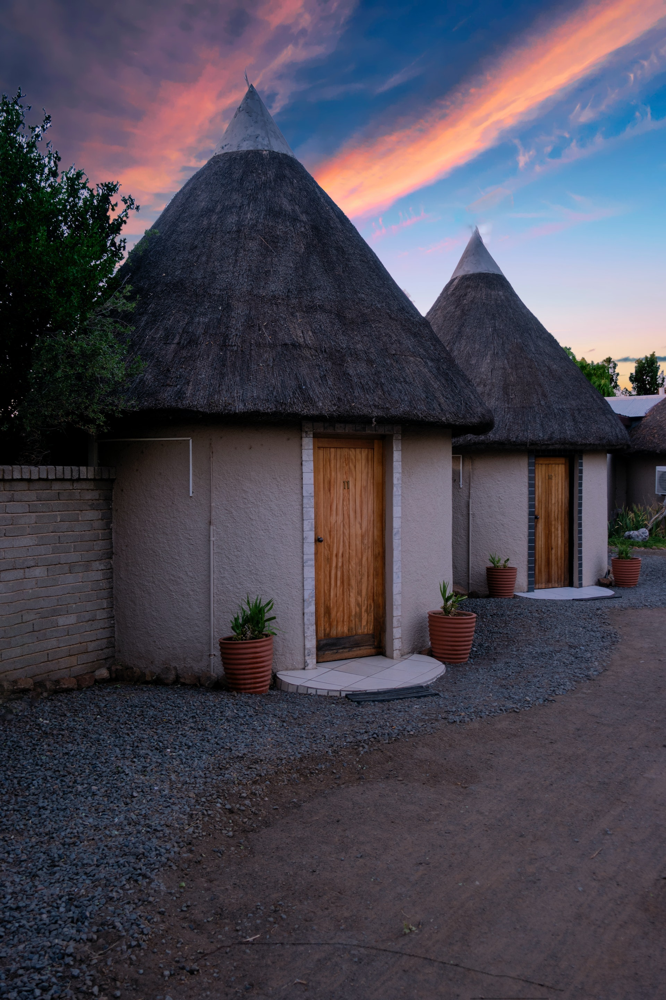
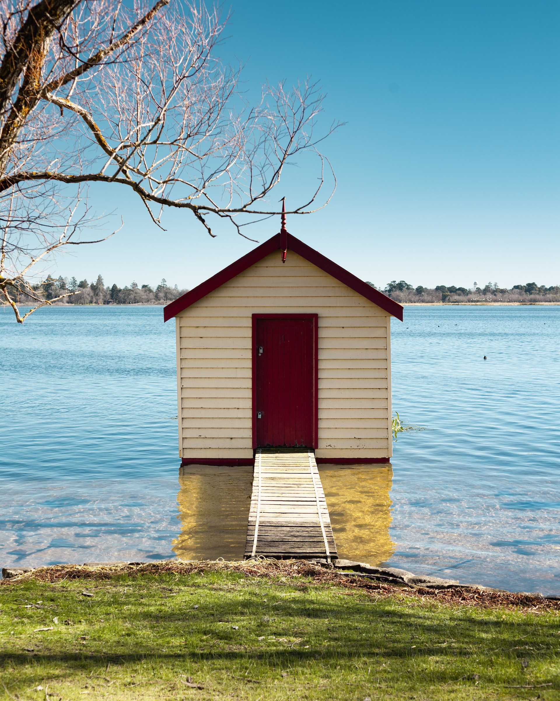
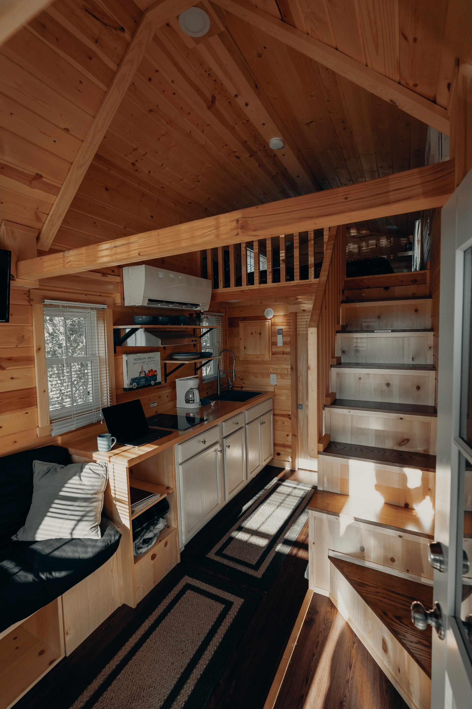
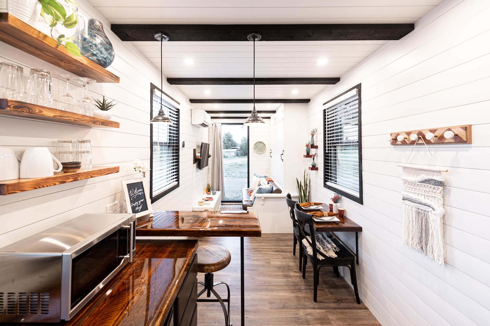
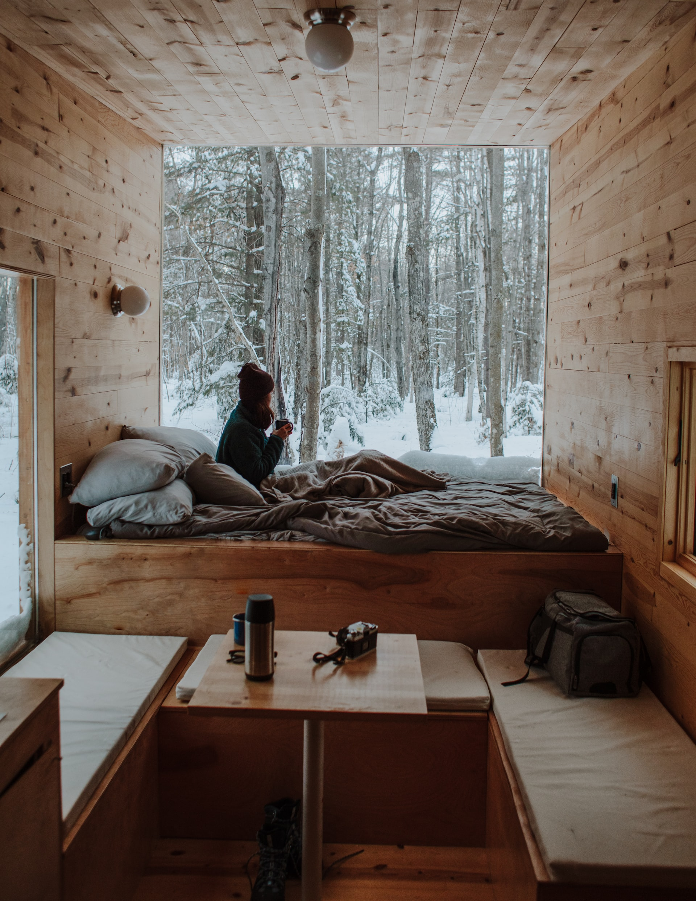